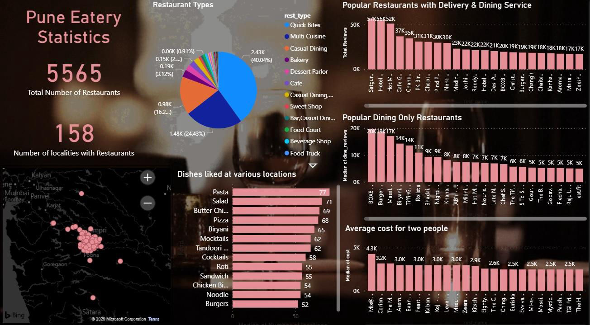

Designed with Mobirise
Web Page Builder1. Introduction
Zomato is one of the food delivery application that is extensively used nowadays to order food and find out best Dining and Restaurant services in the town. I have made use of the Zomato dataset to cater the needs of the people who are looking for best food and best restaurants in Pune.
2. Goal
1. To find out total number of restaurants
2. Various types of restaurants
3. Dishes/cuisines liked at various restaurants
4. Popular restaurants for Dinning and Delivery services
5. Average cost for two people
3. Methodology and Tools:
The dataset used for this project was found on Kaggle. It was relatively clean and did not require any major changes.
Tool : Power BI was used to create interactive charts and graphs.
Card - to get the total number of accident counts and counts of vehicles involved in both the years.
Pie Chart - to represent various types of restaurants
Stacked Bar Chart - to represent various dishes liked at different locations
Stacked Column Chart - to represent popular delivery and dinning services, dinning only restaurants and average cost at the restaurants for two people.
4. Results and Discussions
The Data being used in this case study is from 2019 for the City of Pune.
1. There are around 5565 restaurants Pune in around 158 localities
2. Pie Chart represents various types of restaurants where around 40% of the restaurants are Quick bites types followed by around 24.43% are Multi Cuisine restaurants whereas Food Court, Beverage and Food Trucks occupies the least percentage.

Designed with Mobirise
Web Page Builder